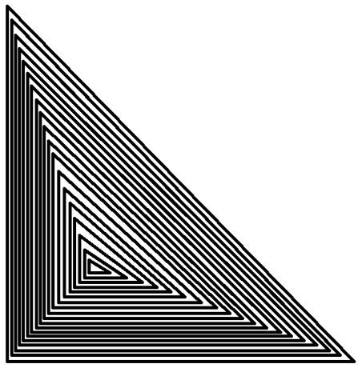

XXX
Choose a Color At First: Red Green Blue Back to the original color Drawing Mode: Squares Triangles Circles Shape Color:
Red Green Blue
Shape Size: (Circles) Segment Count:
Add a colorful version of the below picture to the canvas
